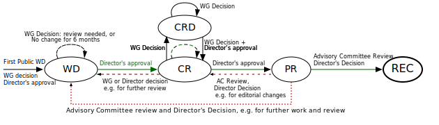
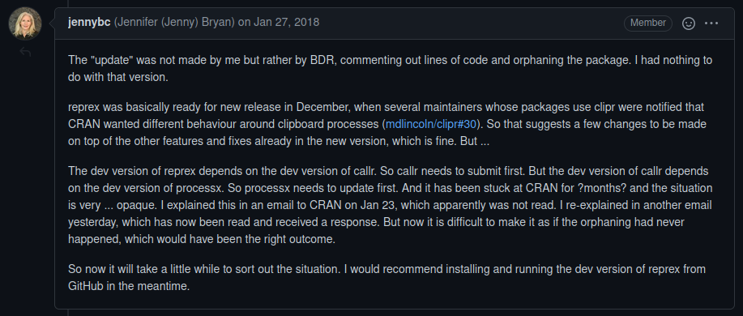

Collaboration on the hub tooling
Preface
The principles and guidelines presented in this document are inspired from:
- communities / working groups in charge of defining widely used new standards, like the IETF and the W3C.
- communities that have created and maintain universes of heavily interdependent packages, such as the tidyverse team.
- general good practice coding rules (e.g., semantic versioning).
Introduction: Goals and expectations

- Hub projects are complex, which present an challenge unusual for academics: developing while in production. Any breaking change in the infrastructure is made difficult by the fact that we don’t break the workflow of our contributors.
- Software development is complex. There is no foolproof method to design a perfect piece of software at the first attempt. Even the most talented and experienced software developers make changes they regret afterwards and are forced to create breaking changes.
Because of this double complexity, it is not likely that all teams will converge towards using the same package at the same time. But this also provides an opportunity: there is value in exploring independently radically different technological solutions to a given problems. One of the team might come across a solution that no other could have foreseen.
However, to keep a collaborative approach, where teams can adopt a solution developed by others, and where we can all build on each other’s work, there are some technical pre-requisites:
- We need to agree on a common basis for all our future work: data format standards and shared design guidelines.
- We need to build modular building blocks so transition to a different approach is easy and doesn’t require changes throughout the ecosystem.
Data
As illustrated in Figure 1, forecasts and the format they use is one of the most central part of hubs. It therefore needs to be the first point of discussion and agreement between hub teams. Subsequent changes should be done via a versioning system to avoid transmitting these breaking changes throughout hub tools.
Versioning
It is inevitable that data format will change over time as well. This is a somewhat common situation when new formats develop and there are plenty of examples to draw from to have a robust development process. The W3C is one of the champions of this approach: SVG, HTML, CSS, WebExtensions, etc.1 In this framework, every proposed modifications go through a heavily codified selection process: First Public Working Draft, Revision of the Working Draft, Candidate Recommendation, Proposed Recommendation, Recommendation (illustrated in Figure 2, from the W3C Process Document). You can see a live example by visiting the CSS Working Group Current Work page: https://www.w3.org/Style/CSS/current-work.

This complex and somewhat rigid framework is necessary because of the billions of users impacted by the recommendations. We might however want a simpler system for the hub. Such a simpler model can be seen in the json schema specification, where stable versions and draft specifications coexist.
All hub teams should agree on a stable models and submit all proposed changes for consideration to the other teams. If the proposed change seem desirable, it should be added to the draft for the next version.
Each package can then specify with which version of the data format it is compatible.
Individual forecasts vs aggregated forecasts format
To reduce confusion and maintenance load, individual forecasts and aggregated forecasts (e.g., as output by covidHubUtils::load_forecasts()) should have the same format. Additional columns could potentially be added to aggregated forecasts but the columns should always be a superset of the columns of individual forecasts.
This allows tools to be used directly on individual forecasts, which may be desirable for forecasters and hub maintainers in many situations.
Guidelines for universe
Modular approach
To ensure each team can easily swap individual pieces of their infrastructure, it is important to ensure that the universe is modular. Each package should focus on a single task (defined beforehand).
Avoiding redundancy
On a similar note, to avoid that changes in one piece of the infrastructure ripple throughout the whole universe, overlap between packages should be limited as much as possible.
The current hub infrastructure gives a good example of the maintenance overhead due to overlap and redundancy across packages. As of 2021, the submissions are checked for validated in the point during the pipeline: during the submission process, when loaded with covidHubUtils::load_forecasts(), when uploaded to zoltar. This means that any change in the data format requires changes in each one of the 3 packages. Ultimately, it makes it more difficult to try to modify & improve the infrastructure.
Designing general tools
Since it can be difficult to predict how the other hubs will use the packages your team designed, it is good practice to start with a very streamlined architecture, with few features. It is easier to add features & complexity later down the line once other hubs agreed to the proposed new features than to try and simplify an existing package.
If the tool can be made usable outside the context of hubs, it is even better. Users are the most valuable and hardest to get feature of research software. More users means more bugs uncovered, which is crucial, since research software is often poorly tested.
Guidelines for individual packages
Inputs
Whenever possible, the first input should be the data format defined in data.
There should be tests ensuring that all functions return the same output when fed with data.frame, tibble or data.table since users might prefer to use one or the other in the other steps of their workflow.
Outputs
Whenever possible, the output should be the data format defined in data. Using the same format in input & output makes it easy for users to use functions in a pipeline with a previously unanticipated order.
Lifecycle & versioning
Semantic versioning
It is likely that many packages from the universe will depend on others packages from the universe, possibly maintained by another team. It is therefore important to be able to identify breaking changes easily. The most common pattern for this is to use semantic versioning, where breaking changes are signified by the major version increase.
Reverse dependency checking
Even with a modular structure, packages will be inevitably deeply interconnected. This poses challenges regarding release timing. The tidyverse for example already had to deal with complex issue on this matter:

To make sure updates are published in the correct order, all packages in the universe should be set up for reverse dependency checking. This service is provided for free by CRAN but since we did not decide yet if all packages should be on CRAN, we should also set up our own reverse dependency checking infrastructure.
Update adversiting
Additionally, to make sure breaking changes are promptly addressed in reverse dependencies, all new versions should be loudly announced to all other teams. An issue way to do this would be to create a dedicated slack channel with subscriptions to the relevant repository RSS feeds.
Release cadence
??
See discussion at https://discuss.ropensci.org/t/release-cadence-how-do-developers-estimate-when-a-new-release-is-due/2861
Questions for scope assessment
- Could this package be accepted by CRAN in theory (even if you don’t go through the actual submission process)?
- Would this package work without any changes in someone started a hub in a new region (e.g., Africa or South America)?
- To how many concepts or processes from Figure 1 does this package relate? The answer should probably be one in most cases.
Collaboration & communication
Centralized organisation
To ensure constant quality across the universe and facilitate infrastructure building (e.g. Section 5.3.2, Section 5.3.3), it might make sense to group all packages in a single GitHub organisation.
Governance
Complex projects with many moving parts and numerous collaborators need a clear governance structure. If two collaborators disagree and cannot resolve their disagreement through a discussion, what should be done? In a typical academic article framework, the first author is usually allowed to get the final say in these matters. But this system cannot easily be transposed here.
First of all, in case of a disagree, there is nothing wrong with agreeing to move in different directions for this specific piece of infrastructure. As mentioned in the introduction of this document, there is value in exploring different alternatives, as long as we make sure we remain compatible.
However, this kind of split should remain limited because it takes off time from an already very time-limited team. Open-source projects usually deal with this situation by having a clear governance model in a public document. A short and simple example of a governance model comes from the tidyverse and ggplot2: https://github.com/tidyverse/ggplot2/blob/main/GOVERNANCE.md.
Monthly meetings
To ensure communication stays active, we should book a slot for monthly meetings. Additionally, to ensure equal footing of all teams or to maintain engagement, a rotating schedule should be established. Each team will be responsible for presentation one existing or planned piece of infrastructure. This should facilitate exchange of workflow pieces between teams and facilitate communication and identification of possible incompatibility.
Footnotes
The IETF is another champion and delivered standards like the HTTP protocol.↩︎